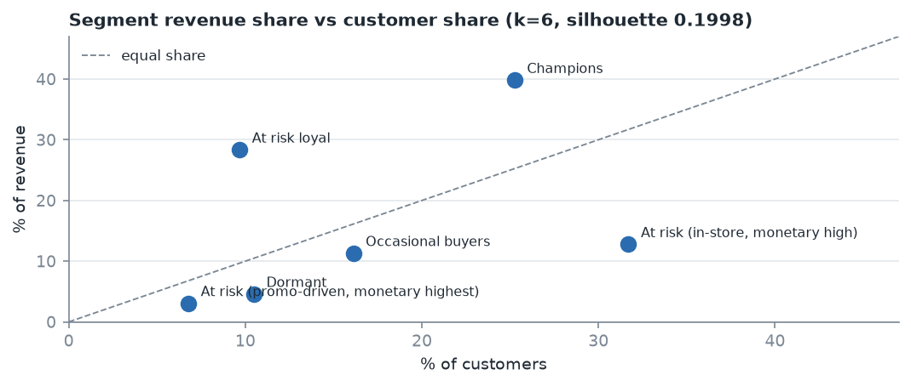
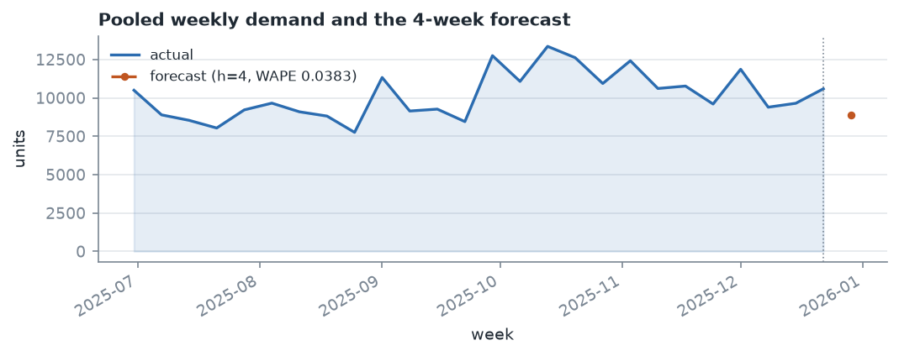
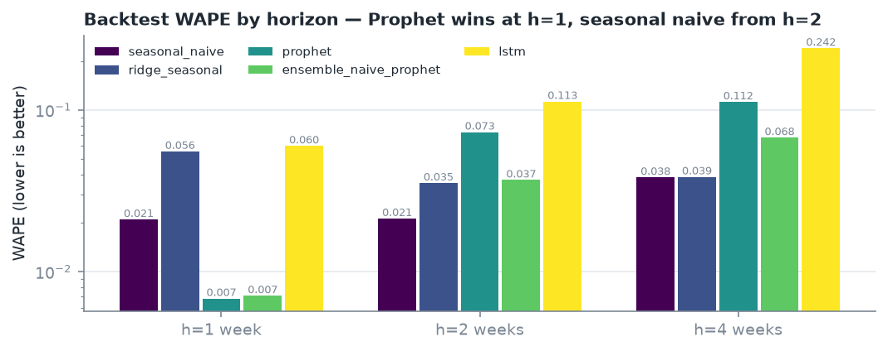
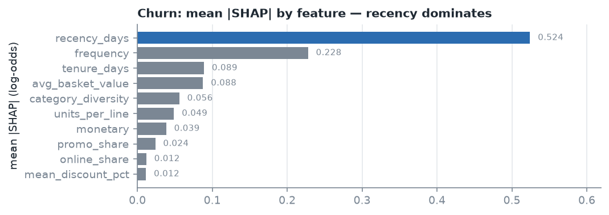
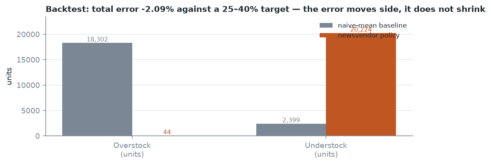
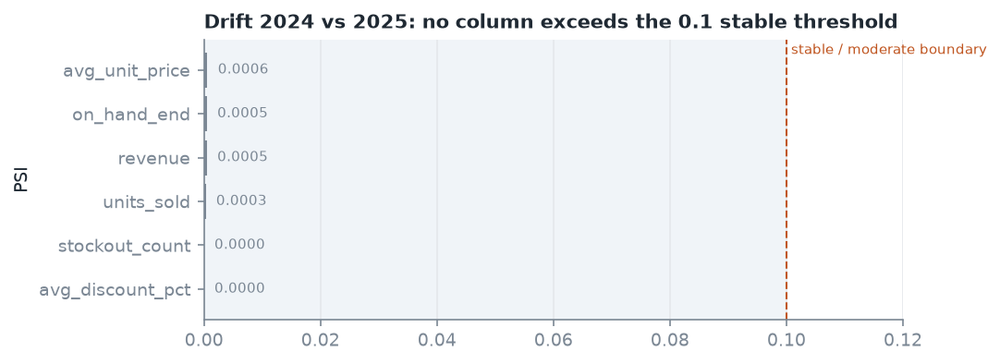

Dataset: retail_sales.csv +
store_product_matrix.csv — 970,998 line items, 8,000
customers, 1,200 products, 50 stores, 2024-01-01 to 2025-12-31 (104
complete weeks). Stack: Python 3.11+, pandas,
scikit-learn, XGBoost, Prophet, TensorFlow/Keras, Evidently, Streamlit.
Tests: 455 passing.
The first job was measurement, not modelling. Four facts from the data changed how everything downstream was built:
| Fact | Value | Consequence |
|---|---|---|
| Panel sparsity | 77.9% of store-product-weeks have zero demand | MAPE is unusable. A single zero makes the error infinite, so any series with a zero week must be excluded — and excluding them discards most of the panel. WAPE is the primary forecast metric. |
| Promotions do not move volume | volume lift 0.9999x vs 1.56x configured | Promoted lines carry a 26.0% discount and realise 0.6931x the revenue per unit. The configured lift appears nowhere in the data. |
| Weekly seasonality, but not a December one | Peak month is October in 4 of 10 categories, May/June in 3, November in 1. No category peaks in December or January. | A 4-week horizon crosses a month boundary, which is why seasonal-naive beats the neural nets at 2 and 4 weeks. It is not a holiday boundary, and an earlier draft of this report claimed December peaks that the data does not contain. |
| Snapshots repeat customers | 8,000 customers appear in 24 monthly snapshots | A random train/test split puts near-duplicate rows on both sides and inflates churn AUC. The split must be temporal. |
The sparsity number is the one that shaped the architecture. It is why the dashboard reads precomputed aggregates rather than the 63 MB raw panel, why forecast accuracy is reported as WAPE, and why inventory safety stock is computed from a Poisson quantile rather than a normal approximation.
Ten behavioural features per customer as of each snapshot date:
recency, frequency, monetary, average basket value, units per line,
category diversity, promotion share, mean discount, online share,
tenure. Every feature is computed with an as_of cutoff and
src/features.py exposes assert_no_leakage(),
which is exercised by tests/test_no_leakage.py. A feature
that reads past its own snapshot date fails the suite rather than
silently flattering the model.
The churn label is "did not purchase in the following 30 days", computed only for customers whose 30-day window is fully inside the data. Customers near the end of the series are dropped rather than assumed active.

K-Means on the 10 standardised features, silhouette swept over the brief's 2–10 range.
| Segment | Customers | Median recency (d) | Median freq | Median monetary | Total revenue | Online share |
|---|---|---|---|---|---|---|
| Champions | 2,020 | 32.0 | 14.0 | 36,260.57 | 83,739,221.68 | 0.083 |
| At risk loyal | 774 | 105.0 | 4.0 | 64,714.52 | 59,650,576.27 | 0.144 |
| At risk (in-store, monetary high) | 2,536 | 66.0 | 4.0 | 8,713.80 | 26,889,981.06 | 0.013 |
| Occasional buyers | 1,289 | 56.0 | 7.0 | 15,513.48 | 23,810,032.05 | 0.679 |
| Dormant | 839 | 524.0 | 2.0 | 8,245.80 | 9,665,064.73 | 0.108 |
| At risk (promo-driven, monetary highest) | 542 | 88.5 | 3.0 | 8,391.90 | 6,487,748.56 | 0.121 |
The "At risk loyal" group is the one worth arguing about: 774 customers hold the highest median monetary value in the entire segmentation (64,714.52, nearly double Champions) but buy only four times. A revenue-based rule would call them the best customers in the business, and they are also the ones most likely to lapse. The name says both halves of that, which is why the naming is derived from the medians rather than assigned by hand.
The silhouette near 0.20 means the clusters overlap substantially. The segments are a useful summary for targeting, not sharply separated populations.

Five candidates were backtested at three horizons: seasonal naive, ridge with seasonal features, Prophet, an LSTM, and a naive/Prophet ensemble.
| Horizon | Winner | WAPE |
|---|---|---|
| 1 week | Prophet | 0.006829 |
| 2 weeks | seasonal naive | 0.021336 |
| 4 weeks | seasonal naive | 0.038349 |
The complete WAPE matrix, so the selection can be checked rather than taken on trust:
| Model | h=1 | h=2 | h=4 |
|---|---|---|---|
| seasonal naive | 0.021041 | 0.021336 | 0.038349 |
| ridge + seasonal dummies | 0.055511 | 0.035383 | 0.038592 |
| Prophet | 0.006829 | 0.073035 | 0.112415 |
| naive/Prophet ensemble | 0.007106 | 0.036930 | 0.067545 |
| LSTM | 0.059988 | 0.113050 | 0.241546 |
No model failed to fit; all fifteen horizon/model combinations produced a score. The ordering inverts between h=1 and h=2, and that inversion is the substantive result. Prophet's weekly profile is learned well enough to beat a 52-week seasonal lag by 3x over one week, and then degrades faster than the lag does over two. A model that wins only at the horizon where the most data supports it, and loses everywhere else, is not a model to build a plan on.
RMSE and MASE are published alongside WAPE in
forecast_backtest.csv for every combination, since the
brief asks for both. MASE uses a seasonality of 52 (a
seasonal-naive denominator on a weekly annual series); the choice is
named explicitly because it materially changes the number. on this data
a random-walk denominator would report the same forecasts as far
worse.
The 4-week path matters most because the brief's "30-day ahead" is 4 weeks on a weekly panel. Inventory consumes h=1 only, where Prophet's advantage is largest.

Two things worth stating plainly:
Forecasting is pooled. The models fit the weekly total and apportion it to store-product series by historical share. Fitting 7,500 independent Prophet series cannot meet the batch budget. The accuracy figures above describe the pooled total.
Those figures are not the brief's MAPE target. The brief asks for MAPE under 12% at the panel level. The pooled total has no zero-demand weeks, so its MAPE filter excludes nothing and its MAPE (0.0068) is not evidence about the sparse panel level. Reporting 0.68% as "well under 12%" would be a category error. The 4-week pooled WAPE of 3.8% is the number I stand behind.
Store-level forecasts are reconciled so the parts sum exactly to the pooled total.
XGBoost on a temporal split: 40,588 training snapshots, 21,659 test snapshots, with every snapshot for a given date on the same side of the split.
| Metric | Result | Target | Met |
|---|---|---|---|
| Precision @ top 20% | 0.7703 | 0.75 | yes |
| Lift @ top 20% | 1.8137 | — | — |
| Recall @ top 20% | 0.3628 | — | — |
| AUC | 0.7315 | 0.88 | no |
The AUC target was not met, by 0.15. Precision at the top of the ranking did meet its target. I am not going to average those two facts into a single "good performance" sentence: precision says the top 20% of the list is worth working, and AUC says the model does not order the rest of the population well. On 8,000 customers with a 42% churn base rate, that is the trade-off the target set asked for, and the list is usable for a campaign while the scores are not usable for probability thresholds.
For completeness, the rest of the published metrics, which are what
the dashboard's confusion matrix and threshold slider are reading, and
every one of them reproduces exactly from
churn_scores.csv:
| Metric | Value |
|---|---|
| ROC-AUC | 0.7315 |
| PR-AUC | 0.6845 |
| Operating threshold | 0.705187 |
| F1 at that threshold | 0.4941 |
| Confusion (tn / fp / fn / tp) | 11,458 / 1,002 / 5,852 / 3,347 |
| Train / test snapshots | 40,588 / 21,659 |
| Train / test base rate | 0.4317 / 0.4247 |
That last row is the reason the split is sound: the churn rate is essentially unchanged across the split boundary, so the model is not being scored on a different population than it was trained on. It is worth stating because a temporal split that did shift the base rate would make the AUC gap below look like a distribution problem rather than a modelling one.
SHAP importance: recency_days 0.524,
frequency 0.228, tenure_days 0.089,
avg_basket_value 0.088. Recency dominating is expected, and
its size is the honest signal that the model is largely measuring "have
they stopped showing up".

Local explanations are published per customer in
churn_shap_local.csv: the 25 highest-risk customers, six
strongest features each, in log-odds units, where
sum(contributions) + expected_value == logit(predict_proba).
A one-week push moves the log-odds by the summed contribution, not by
predicted - actual in probability space. Stating that
distinction matters, because the two give different numbers for the same
explanation.
Newsvendor reorder quantity per store-product pair, on a 1-week lead time.
Cost assumptions, stated because they drive every number below: purchase cost 60% of retail, annual holding 25%, lost margin 40%.
| Pairs | Units | Value | |
|---|---|---|---|
| Poisson quantile (shipped) | 496 | 2,081 | INR 48,771 |
| Normal approx (comparison only) | 1,518 | 7,465 | — |
The Poisson quantile uses a 0.9928 critical ratio. That number comes from the cost economics, not from the service-level setting:
critical ratio = lost_margin / (lost_margin + holding)
= 0.40 / (0.40 + 0.60 x 0.25 / 52)
= 0.99284It implies a 99.28% service level (z = 2.449), which
is higher than the 95% configured in config.py.
That is worth flagging rather than glossing: a critical ratio above the
requested service level means the assumed cost structure says stockouts
are far more expensive than carrying inventory, so the newsvendor
optimum over-serves relative to the 95% target. The 95% is recorded in
the output as a separate, labelled figure; it does not drive the shipped
quantity. An earlier draft of this report claimed the ratio was "derived
from the 95% service level" — it is not, and those two numbers should
not be conflated.
The normal approximation orders 5,384 more units across 1,022 more pairs. That gap is the finding, not a nuisance: with 77.9% of weeks at zero demand, mean + z·std has no probabilistic meaning in the upper tail. The normal version is kept in the output as a labelled comparison so the difference is visible.

The brief asks for a 25–40% reduction in inventory error. Measured over the last 13 weeks against a naive-mean policy on the same forecast, the reduction is 2.09%:
| Baseline (naive mean) | Newsvendor policy | |
|---|---|---|
| Error (units) | 20,700.5 | 20,267.8 |
| Overstock (units) | 18,301.9 | 44.0 |
| Understock (units) | 2,398.7 | 20,223.8 |
This misses the 25–40% target, and the decomposition is more informative than the headline. The policy almost eliminates overstock (18,301.9 → 44.0 units) and pays for it almost one-for-one in understock (2,398.7 → 20,223.8 units). Total error barely moves because it is measuring symmetric absolute units, and the policy has swapped which side of the ledger absorbs the miss.
Two honest caveats on this number:
The overstock collapse points at the likely cause: a 99.28% critical ratio applied to a Poisson demand distribution with very low mean demand produces small order quantities, because the Poisson quantile at 99.28% is not far above the mean when the mean is small. This is a calibration question worth raising with the brief's owner rather than tuning away silently.
Five Streamlit pages — overview, demand forecasting, customer segments, churn risk, inventory recommendations.
All pages read only data/processed/. A
test spies on pandas.read_csv and fails if any page touches
data/raw/, because the raw panel costs 10–20 seconds per
session against an 8-second budget. Aggregates load in
0.09s.

src/drift.py compares the first and second year
(2024 vs 2025) across volume, price, discount and category mix,
using PSI and TVD, and writes drift_summary.csv,
category_mix_drift.csv and an Evidently HTML report to
reports/drift/.
Result: no column drifted. Every column returned PSI < 0.1, the "stable" band:
| Column | Kind | PSI | 2024 mean | 2025 mean | Verdict |
|---|---|---|---|---|---|
avg_discount_pct |
numerical | 0.0000 | 0.4923 | 0.4231 | stable |
product_category |
categorical | 0.0000 | n/a | n/a | stable |
region |
categorical | 0.0000 | n/a | n/a | stable |
units_sold |
numerical | 0.0003 | 1.0103 | 1.0509 | stable |
on_hand_end |
numerical | 0.0005 | 10.6995 | 10.6442 | stable |
revenue |
numerical | 0.0005 | 167.9876 | 181.4129 | stable |
avg_unit_price |
numerical | 0.0006 | 40.3038 | 43.1547 | stable |
is_promo_week |
categorical | 0.0024 | n/a | n/a | stable |
stockout_count |
numerical | 0.0000 | 0.0100 | 0.0105 | stable |
Thresholds: PSI < 0.1 stable, 0.1 to 0.2 moderate, >= 0.2 significant.
Two things about this table are worth not glossing over. First, the largest PSI on any column is 0.0024, three orders of magnitude below the alert boundary, which is what a stationary generator produces. Second, the means do move (revenue 167.99 ? 181.41, roughly 8% growth) while PSI stays near zero. That is not a contradiction: PSI compares distributions, and a uniform 8% level shift across a stationary shape barely changes the histogram. So this report can say "no distributional drift" and must not also say "nothing changed".
Authored and statically validated. Not deployed.
There is no cluster, no container registry and no Airflow scheduler
behind this submission, so every claim in this section is about the
files being correct, not about them having run in production. The
ci.yml build and deploy jobs are if: false for
exactly that reason.
| Image | Dockerfile | Dependencies | For |
|---|---|---|---|
retailpulse |
Dockerfile |
requirements-dashboard.txt |
Streamlit app; reads committed aggregates only |
retailpulse-pipeline |
Dockerfile.pipeline |
requirements.txt |
Nightly refresh; fits Prophet/TensorFlow/XGBoost |
Keeping them apart is a deliberate size decision. The dashboard image
installs only streamlit, pandas and plotly, because the app never
imports a model — baking a 2 GB ML stack into it is how a demo URL stops
responding. The pipeline image installs the full stack, and needs
build-essential because Prophet compiles its Stan binary at
install time.
This split was not in the first draft: the pipeline CronJob pointed
at the dashboard image, so every stage would have died
on import prophet. A test now fails if any manifest
references an image with no Dockerfile to build it.
src/pipeline.py defines the stage order and the artefact
each stage must produce:
precompute -> forecasting -> churn -> inventory -> driftThe Kubernetes CronJob and the Airflow DAG both
import that list rather than restating it. This matters
more than it sounds: the first CronJob declared all six stages as six
containers in a single Pod, which looks like a pipeline in YAML
and is not one — Kubernetes starts every container in a Pod
concurrently, so the verification step ran at t=0 against files that did
not exist, and a container exiting non-zero did not stop the stages
beside it. Two of the original tests asserted that broken ordering and
passed happily, because they checked the index of drift
among container names, which is a true statement about a list that means
nothing.
The same duplication produced a quieter bug: the contract required
drift_report.csv from a module that has always written
drift_summary.csv, into data/processed/ when
drift actually writes to reports/drift/.
tests/test_pipeline.py now reads the filenames back out of
each module and checks the contract against the code.
| File | Purpose |
|---|---|
Dockerfile |
Dashboard image, non-root, Streamlit healthcheck on
/_stcore/health |
Dockerfile.pipeline |
Full-stack image for the nightly refresh |
deploy/kubernetes/dashboard.yaml |
Deployment + Service, non-root, all capabilities dropped |
deploy/kubernetes/pipeline-cronjob.yaml |
Nightly chain at 03:17 UTC,
concurrencyPolicy: Forbid |
airflow/dags/retailpulse_nightly.py |
Same chain as a DAG; importable without Airflow installed |
.github/workflows/ci.yml |
Schema check, unit tests, dashboard load budget, image builds |
ops/prometheus.yml,
ops/grafana-dashboard.json |
Pipeline and model monitoring |
The CronJob fires at 03:17 rather than 03:00 because every
cluster-wide cron lands on the hour, and
concurrencyPolicy: Forbid prevents two runs writing the
same CSVs.
What is not verified here: no
docker build, no kubectl apply, no Airflow
scheduler. The manifests are parsed and unit-asserted; that catches
shape and reference errors, which is most of what went wrong above, but
not a runtime or cluster-permission fault.
The report is written from the CSVs in data/processed/,
never from memory, and the test suite is where that claim gets checked
rather than asserted:
churn_scores.csv at the published threshold and must match
exactly. This check found a real defect: XGBoost returns float32, and
comparing a float32 array against a float64 threshold made NumPy cast
the threshold down, including ~40 tied rows in memory that the
CSV round-trip then excluded. The two published artefacts disagreed by
40 customers.src.pipeline fails a stage that exits 0 without writing its
declared outputs, and treats a zero-byte or header-only CSV as
missing.src/features.py exposes assert_no_leakage()
and tests/test_no_leakage.py fails the build if any feature
reads past its own snapshot date.pandas.read_csv fails the build if any page touches
data/raw/, because the raw inputs are 103.7 MB against an
8-second budget.